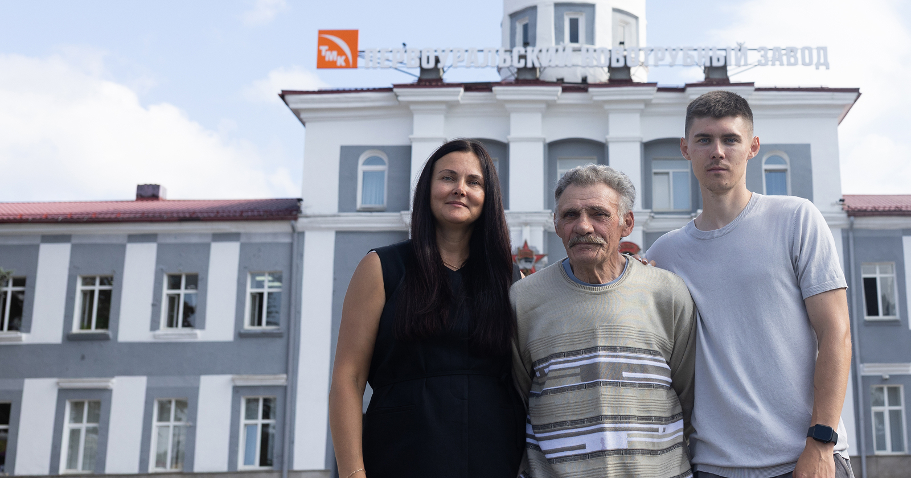
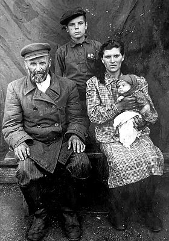
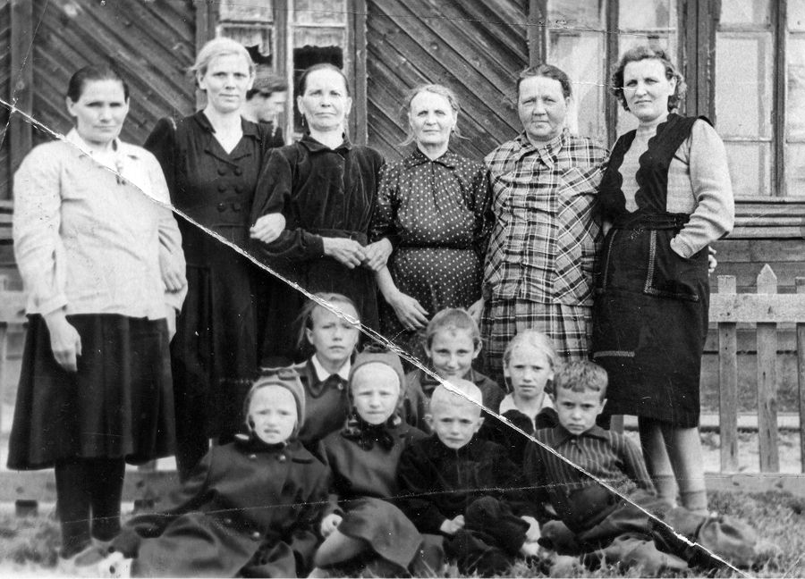
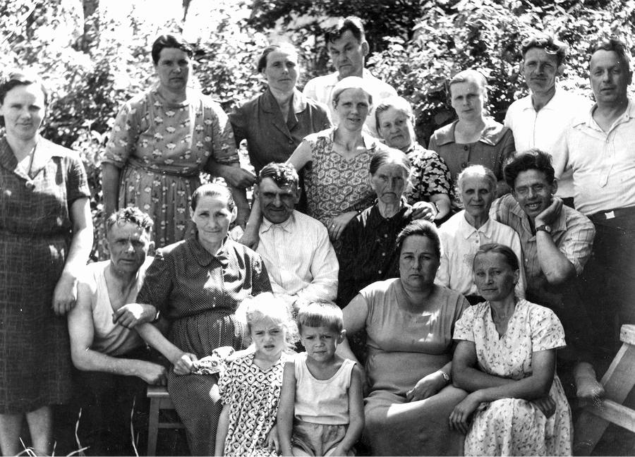
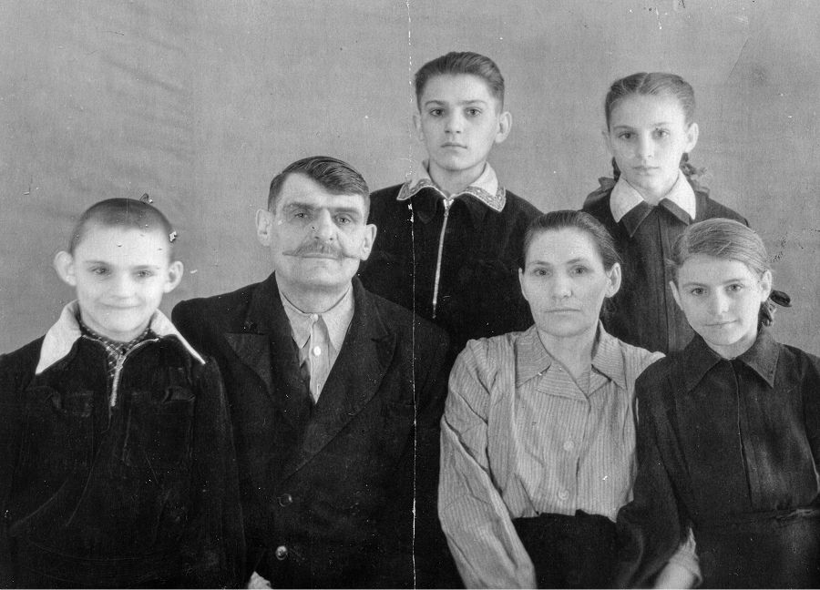
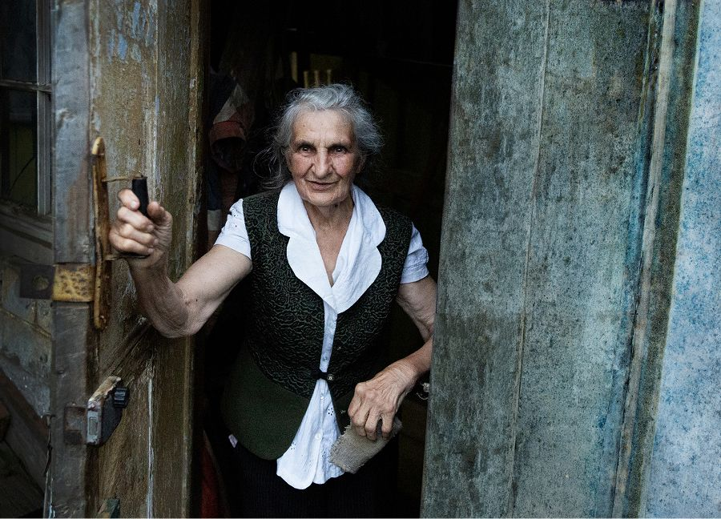
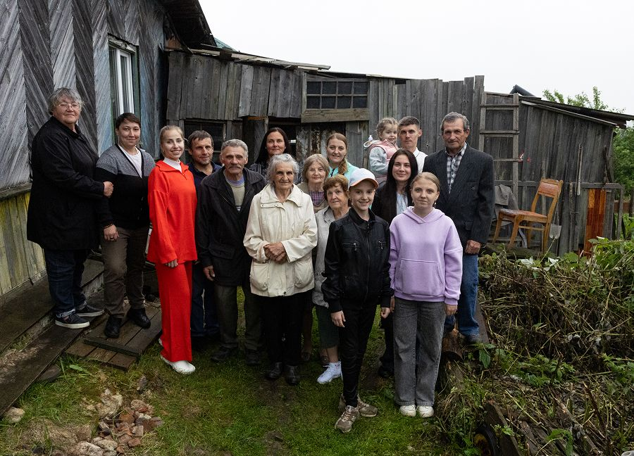

Династия
Поваляевых
Предисловие

Описание фотоВ семье Поваляевых шутят: если ты Поваляев, значит, ты — родня. И, добавим, наверняка у тебя есть связь с Первоуральским новотрубным заводом (ПНТЗ). Ведь общий стаж трудовой династии Поваляевых — свыше 700 лет. Удивительные цифры, особенно с учетом того, что история семьи могла сложиться совсем по-другому.
Иван Константинович Поваляев, отец основателя трудовой династии Николая Ивановича, был раскулачен, скрывался с одним из сыновей в лесах, впоследствии был арестован и пропал в тобольской тюрьме. Сведений об Иване Константиновиче настолько мало, что родственники рады даже крупицам добытой информации вроде девичьей фамилии его супруги.
Жизнь его сына, Николая Ивановича, сложилась ненамного проще. Он тоже был раскулачен
и выселен в Свердловск (ныне Екатеринбург), а позднее отправлен на строительство
Первоуральского завода. Приходилось выстраивать быт в условиях, в которых главной
задачей было просто выжить.
Судьба била его практически буквально: работая подкрановым, Николай Иванович получил
тяжелую травму спины, после которой долго восстанавливался.

Описание фотоНо эти удары Николая Ивановича не сломили. Более того, он не только сам встал на ноги, но и помог десяти братьям и сестрам, которые при его участии приехали в Первоуральск, устроились на заводе и пустили семейные корни. А ведь были еще свои шестеро детей, которых надо было воспитать и снабдить всем необходимым для самостоятельной жизни.
Уделить внимание всем представителям трудовой династии Поваляевых в одной истории было заведомо непосильной задачей, поэтому мы сознательно сосредоточились на одной из веток древа, представители всех поколений которой, включая сегодняшнее, напрямую связаны с ПНТЗ. Наши герои, помимо Николая Ивановича Поваляева, — это его сын Александр Николаевич Поваляев, внучка Ольга Александровна Поваляева и правнук Кирилл Сергеевич Богданов.
Кроме того, среди наших рассказчиков — дочь Николая Поваляева Надежда Николаевна Шавкунова, его племянница — Ольга Васильевна Макарова и супруга Кирилла — Анастасия.
Несмотря на драматический контекст, наша история теплая и пронизана оптимизмом. Даже на примере разных поколений одной ветви династии Поваляевых видно, как со временем меняется уклад жизни, появляются другие интересы, но общие семейные черты, отточенные в самых сложных жизненных условиях, остаются прежними.Но пусть о себе и своей семье расскажут сами Поваляевы.

Описание фотоНиколай Иванович Поваляев
Годы жизни: 19.12.1905 – 25.10.1968. На ПНТЗ работал в цехе №27 подкрановым. Стаж работы – 28 лет. В октябре 1946 года получил медаль «За доблестный труд в Великой Отечественной войне 1941-1945 гг.»
Вот как писали о Николае Ивановиче в ноябрьском номере 1965 года первоуральской газеты «Под знаменем Ленина»:
«Товарищ Поваляев до последнего трудился подкрановым. Этот человек – хороший пример во всем, совесть цеха. К его советам прислушиваются и руководители, и рабочие. Труд для него – не только средство к существованию. К работе он относится с пониманием ее красоты. Вот поставлены для разгрузки вагоны. Николай Иванович подходит к первому из них. Не спеша, с большой сноровкой приступает к делу. И чувствуется, что делает он его не так, как остальные, а вкладывает в работу всю душу. Старается, чтобы каждая заготовка легла точно на предназначенное ей место. Простая, чисто физическая работа, но и в ней видел и чувствовал Николай Иванович какую-то понятную лишь ему красоту».

Надежда Шавкунова (Поваляева)
 Надежда
Надежда Шавкунова
(Поваляева)
Да не были они кулаками. Взяли сироту к себе на хозяйство – попросился парнишка. А потом кто-то решил, что это у них работник малолетний, и раскулачили их.
Сначала отца увезли, а потом маму с дочерью старшей, Варей. В огороде все осталось посажено, картошки очень много было. Мама думала, что это временно. Все бросили и уехали. Везли их обозом. Ночевали в поле у какой-то деревни. Ставили лошадей с телегами кругом, внутри разводили костер, чтобы не околеть. А куда приехали, там ни поесть, буквально ничего. Жили в бараке. С одного края печка и с другого. И никакого разделения внутри. Те, кто натуральные кулаки, у них с собой и крупа была, и мука. А наши-то голоднющие.
 Александр
Александр Поваляев
Всю жизнь они были голодные, бедные. Когда стали их переселять, мать взяла две горстки муки с собой и все. Больше ничего с собой не было. Привезли сперва в какие-то бараки. Потом стали помаленьку их кормить. В Свердловске маленько пожили, а тут Новотрубный завод стал строиться. Их сюда и направили на строительство. Для спецпереселенцев поселок организовали, Трудпоселок. Заехали они в дом в 1931 году, а дело шло к зиме…
Надежда Шавкунова
(Поваляева)
И в этом доме – ни окон, ни дверей. Потом уже окна вставили, полати сделали. Полати-то – самое главное.
Александр Поваляев
Отца реабилитировали только в 1993-м, хотя его и медалью за доблестный труд в Великой Отечественной войне награждали.
Надежда Шавкунова
(Поваляева)
Бывало, соберется компания, и там посторонние мужики давай его кулаком обзывать. Он обижался, говорил, да какие мы кулаки. Не кулаки мы – дураки. Всю жизнь работали не покладая рук.
Но на жизнь у отца не было никакой обиды. Хотя разное случалось. Например, когда они в Свердловске жили, он на строительстве работал и там гильзу нашел. А за ними надзор пристальный был. Пришли к нему ночью, мол, у тебя гильза, где обрез? Нет, говорит, никакого обреза. Как нет, а гильза откуда? Все-таки отпустили его. Он потом повторял: чужого никогда не берите.
Помнится, в колхозе капусту садили. Девчонки пошли, взяли себе каждая по вилку. И я один домой принесла. Отец недоволен был: неси обратно, где взяла. Мама тогда вступилась. Раз уж принесла, давай съедим, что ли.
 Ольга
Ольга Поваляева
Дядя Миша, брат отца, историю рассказывал, что жили очень бедно, кушать было нечего. И была кладовка, она до сих пор в том доме есть. Там хранились продовольственные запасы. А жрать-то хотелось все время, как говорил дядя Миша. И у всех было желание туда залезть и что-нибудь съесть. И вот дядя Миша зашел туда. Смотрю, рассказывает, а там колбаса висит. В общем, в тот вечер наелся он вдоволь, но и от отца получил вдоволь.
Надежда Шавкунова
(Поваляева)
А однажды они у мамы деньги украли. Михаилу тогда уже лет 13 было, Андрею, брату, восемь. Мама их пытала-пытала – не признаются. Сказала тогда отцу. Закрывай дверь на крючок, говорит, и давай ремень. И как начал им по задницам давать. Мама потом очень жалела, мол, лучше бы сама с ними справилась. А деньги у мальчишек нашли в трусах, где резинка была.
Александр Поваляев
Отец и строгий, и добрый был. За что-то поругает, а потом подумаешь – а ведь прав он. Я вот даже не курил при отце. Только с 18 лет при нем начал. И то втихаря. Видишь, что он идет, и сигарету бросаешь. Выпили с ним впервые, когда мне 18 только исполнилось. Компания собралась, а я-то не школьник уже, деньги свои приносил. Отец, кстати, никогда деньги не спрашивал: трать, куда хочешь, одевайся, как считаешь нужным. А не хватало – всегда добавит.

Надежда Шавкунова (Поваляева)
Надежда Шавкунова
(Поваляева)
Папка ласковым запомнился. Когда у меня первый мальчик недоношенным родился, он пришел, посмотрел: как же так, Надя? Вырастет ли? Ласковые слова говорил. Голубочек. Детей любил очень. Соседские ребятишки к нам приходить любили. Он никого не воспитывал никогда, с советами не лез.
Очень любила с ним работать. Когда школу закончила, мне 17 лет было. Чуть ли не каждый день на завод в отдел кадров ходила, а там до 18 лет не брали. Папка говорит: можешь пойти в детский сад воспитывать детей, можешь – продавцом, но я не советую. Сиди дома. И вот он меня ко всему приучал, ремонтировали дом с ним. Приучил меня и гвозди забивать, и дрова колоть.
Александр Поваляев
Сам он на заводе 28 лет проработал. Сперва в железнодорожном цеху, а потом в 27-м цеху под кран встал. Туда привозили заготовки для прокатных станов, грузили их и развозили по цехам.
Надежда Шавкунова
(Поваляева)
Работали они по 12 часов. Папка придет уставший ночью, ляжет отдыхать.
Александр Поваляев
Они, бедные, не сидели без дела. Работа в огороде закончилась – начиналась заготовка дров. Дрова заготовили – шли на покосы. Техники никакой не было, а идти километров 15-20. До самой осени сенокос. Отец всех нас к земле приучил. Лет до пяти-семи, может, и не работаешь, но рядом стой, чтобы ему веселее было, ха-ха.
Бывало, когда уже постарше, пойдешь гулять, а гулянка-то задерживается до самого рассвета. Вернешься домой в 4-5 утра, идешь потихоньку, чтобы никто не увидел. Доберешься до сеновала, там такой запах душистый… Только ляжешь – «Сашка! Давай вставай, работать надо». Ну, какая тут работа, только ж с гулянки пришел. А деваться некуда. Чуть-чуть профилонишь, он тебя отчитывал. Почему не хочешь себя кормить? Каждому из сыновей, кто женился, участок выдавал. Вот, теперь сам себе обрабатывай.
Интересный дядька, здоровый такой был, плечистый. Он дружил с одним белорусом, тоже переселенцем. Вот они вместе работали, а тогда на заводе все на лошадях возили. А лошадка-то бедная, тоже голодная, качало ее. Бывает, станет в грязи и, хоть ты тресни, никуда не идет. Так этот белорус подлазит под брюхо к лошади, встает и перетаскивает ее на сухое место. Такие вот здоровые мужики были.
Надежда Шавкунова
(Поваляева)
Вы бы знали, как наши родители собирались, как они песни пели. Не на два голоса, а на четыре. Пели казацкие народные. Очень хорошо у них получалось. Аж стены трещали.
Александр Поваляев
Еще от отца у Поваляевых привычка ходить по грибы да ягоды. Он знал места, подолгу мог ходить. И нас с собой брал. Помнится, как-то пошли по грибы: отец, я, сестра Надя и племянница. А дело к осени, нет грибов. Там озерко было Афанасьевское, пойдем, говорит, туда, груздей наберем. Но я-то вижу, что с грибами неважно, развернулся и ушел. Да только у меня вся еда в рюкзаке с собой была. А они дошли до места, сели у речки. Вода чистая, родниковая, все умылись, причесались…
Надежда Шавкунова
(Поваляева)
А по-моему, это за черникой мы ходили. Ну да ладно. У папы еще прозвище было, Усатый. Красивые у него усы были. Он, прежде чем есть, усы обязательно подкручивал. Из одного кармана расчесочку достал, волосики причесал. Из другого кармана – зеркальце. Ну что, говорит, девчата, давайте поедим. А обед-то у Шурочки!
Александр Поваляев
Они и не знают, что ответить-то. Посидели и домой. Кое-как ноги приволокли. Километров 15 пешком шли. Такой крик был, что я голодом людей оставил. Постыдил меня. Потом уж как пойдем за грибами, все приговаривал: смотри у меня, не поверни налево, хе-хе-хе.

Описание фото
Надежда Шавкунова
(Поваляева)
Сейчас-то мы папку вспоминаем, жалеем. Тяжелая ему жизнь досталось. Раскулачили, рано женили, работать много пришлось.
Надежда Шавкунова
(Поваляева)
В декабре отцу исполнилось бы 120 лет. Такие большие цифры, а как будто он совсем недавно был с нами. Я тут про папу стихи написала. Прочитаю, и вы все про него поймете.
Чтоб жизнь твою судить
И не опошлить память.
И как твоя святая голова
Случайно миновала паперть?
И выслан ты был кулаком.
Забот полно, но не подашь и виду,
Ты заглушил свою обиду.
Где пол без досок и гвоздей.
Где клин неубранных полей…
Теперь жалей, хоть не жалей.
Старался сам, насколько мог.
Но милости просил залог,
Когда завязывал пупок.
То хорошо, а то прорвало.
Детишек-школьников собрать,
Жене опять вот-вот рожать.
Крутился сам по мере сил.
Все лето леснику косил,
Свою корову прокормил.
Решать проблемы помогал.
И действовал довольно жестко,
Где все решалось очень просто.
Что истоптал ты без сапог.
И сколько ты потратил сил,
С природой всех нас подружил.
Не до импортной еды,
Но по праздникам для деток
Были слаще пироги.
Человека насквозь видишь:
Старичок ли старенький
Иль ребенок маленький.
Где капуста, кусок сала.
Молоко в налог сдавали,
Но детей не обижали.
Тебе уже за 60.
Собрался весь сибирский род
На теплый маленький порог.
Ты всех пристроил на завод.
За поваляевским столом,
Усатому хозяину
Всем хором подпоем.
И сейчас волнует душу.
Хлопец, что седлал коня,
Напоминает мне тебя.
И новой жизнью насладиться.
Детьми и внуками гордиться –
И некуда сейчас спешить.
Характер – новотрубный след.
Мы все похожи на тебя:
Скорбим и помним мы тебя.
Эпилог
Кирилл и Анастасия растят трехлетнюю дочку Ариану. Станет ли она продолжательницей трудовой династии Поваляевых, сейчас сказать затруднительно. Хотя родители рассказывают, что девочка уже проявляет интерес к отцовским рабочим будням.

{kind=link}
{kind=link}
{kind=link}
{kind=link}
{kind=link}
{kind=link}
{kind=link}
{kind=link}
{kind=link}
{kind=link}
{kind=link}
{kind=link}
{kind=link}
{kind=link}
{kind=link}
{kind=link}
{kind=link}
{kind=link}
{kind=link}
{kind=link}
{kind=link}
{kind=link}
{kind=link}
{kind=link}
{kind=link}
{kind=link}
{kind=link}
{kind=link}
{kind=link}
{kind=link}
{kind=link}
{kind=link}
{kind=link}
{kind=link}
{kind=link}
{kind=link}
{kind=link}
{kind=link}
{kind=link}
{kind=link}
{kind=link}
{kind=link}
{kind=link}
{kind=link}
{kind=link}
{kind=link}
{kind=link}
{kind=link}
{kind=link}
«А еще есть такие игровые автоматы, когда нужно краном подцеплять мягкие игрушки. Принцип-то такой же, как у меня, – смеется Кирилл. – Говорим дочке, что папа примерно тем же занимается. Но, честно признаюсь, я бы не хотел, чтобы она пошла в мою профессию. Если только она сама того пожелает».
Найдет ли себя Ариана в металлургии или в другой области, в конечном счете, наверное, не так уж и важно. А вот станет ли она честным, ответственным, порядочным человеком – гораздо более серьезный вопрос. Кажется, что в семье Поваляевых таких воспитывать умеют.